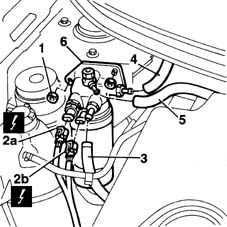
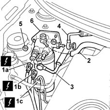
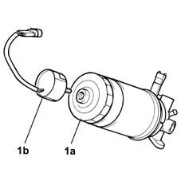

1044B10 fuel filter assembly - r + r or replace
- Path
- Procedures > 10 ENGINE UNIT > 1044 FUEL CIRCUIT PUMP/S AND DEVICES > 1044B fuel filters > 1044B10 fuel filter assembly - r + r or replace
- Kind
- repair procedure (removal / refitting; the operation number is the code)
- Applies to
- engines: 1.9 JTD 8V; all production periods
- Interactive page
- https://sloeber94.github.io/elrnDB-fMltpl/en/#/2891384
Applies to: engines: 1.9 JTD 8V; all production periods
 Removing
Removing
 Refitting
RefittingOpen the bonnet lid.
1. Unscrew the retaining nuts.
2. Disconnect fuel filter electrical connections (2a) and (2b).
 | Name | Connector |
|---|---|---|
2a | Diesel heater resistance |
| Name | Connector |
|---|---|---|
2b | Diesel heater resistance |
3. Disconnect the tank inlet pipe from the fuel filter.
4. Disconnect the pressure pump inlet pipe from the filter.
5. Disconnect the return manifold inlet pipe from the filter.
6. Remove the fuel filter from the engine.

Applies to: engines: 1.9 JTD 8V; all production periods
Refitting
RemovingFit the fuel filter in its seat.
Connect the fuel filter electrical connections.
| Name | Connector |
|---|---|---|
- | Diesel heater resistance |
| Name | Connector |
|---|---|---|
- | Diesel heater resistance |
Connect the fuel lines to the fittings on the filter.
Tighten the retaining nuts.
Close the bonnet lid.
Applies to: engines: 1.9 JTD 8V; all production periods; only with equipment: Euro 3
Removing
RefittingOpen the bonnet lid.
1. Disconnect the electrical connections (1a), (1b) and (1c) for the fuel filter.
| Name | Connector |
|---|---|---|
1a | Fuel temperature sensor |
| Name | Connector |
|---|---|---|
1b | Diesel heater resistance |
2. Open the retaining band and disconnect the supply pipe to the return manifold from the filter.
3. Undo the connector and disconnect the fuel supply pipe from the tank from the fuel filter, keeping the copper seals.
4. Undo the connector and disconnect the supply pipe to the pressure pump from the filter, keeping the copper seals.
6. Remove the fuel filter from the engine.

Applies to: engines: 1.9 JTD 8V; all production periods; only with equipment: Euro 3
1. If necessary, with the diesel filter (1a) detached, undo the water presence sensor (1b) and remove it, complete with wiring.

Applies to: engines: 1.9 JTD 8V; all production periods; only with equipment: Euro 3
Refitting
RemovingIf previously removed, tighten the water presence sensor.
Fit the fuel filter in its seat.
Tighten the retaining nuts.
 | Fastening | Component | Ø | Value (daNm) |
|---|---|---|---|---|
- | Nut | UNION TO CARBURETTOR/INJECTION | - | 0.8 |
Position the pressure pump supply pipe and copper seals and tighten the connector fastened to the filter.
| Fastening | Component | Ø | Value (daNm) |
|---|---|---|---|---|
- | Connector | SUBMERGED FUEL PUMP | - | 3.5 |
Position the fuel delivery pipe from the tank and the copper seals and tighten the connector fastened to the filter.
| Fastening | Component | Ø | Value (daNm) |
|---|---|---|---|---|
- | Connector | PLUG/SEAL FOR FUEL FILLER PIPE | M14 | 3.5 |
Position the supply pipe to the return manifold and close the band.
Connect the fuel filter electrical connections.
| Name | Connector |
|---|---|---|
- | Fuel temperature sensor |
| Name | Connector |
|---|---|---|
- | Diesel heater resistance |
Close the bonnet lid.
Topics linked from this page (2)
Topics that link to this page (11)
- B20 ENGINE STARTS, AND CUTS OUT STRAIGHT AWAY
- D04 ENGINE NOT RUNNING SMOOTHLY
- 1044B20 fuel filter filtering element - replace
- 1044D10 fuel heater - r + r
- 1280B21 (Pump) - MASTER CYLINER R.R. for right hand drive versions
- 1280B35 FLEXIBLE PIPE between intermediate rigid pipe and (pump) - master cylinder R.R. for right hand drive versions
- 3330D18 brake servo r r for right hand drrive versions
- 4130B21 power steering pump r r with interfering parts removed
- 4130B24 power steering pump r r for versions with air conditioner
- 4130B34 supply pipe from fluid resevior to power steering pump r r
- 4130B35 supply pipe from fluid resevior to power steering pump r r for right hand drive versions